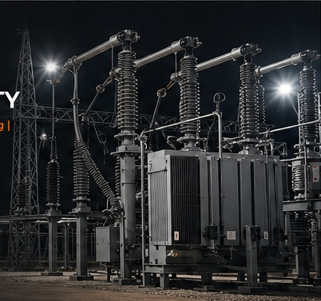

SPECIALIST HV
OPERATIONAL SUPPORT
Experienced operational control and safety management for High Voltage electrical systems throughout construction, commissioning, energisation and operational activities.
Powertec Utilities Ltd provides specialist High Voltage engineering, Senior Authorised Person (SAP) and electrical safety management services across the UK and Europe.
Our experience spans electricity distribution networks, major infrastructure and hyperscale data centre commissioning.
ENQUIRE ABOUT OUR SERVICES
Experienced operational control and safety management for High Voltage electrical systems throughout construction, commissioning, energisation and operational activities.
HV operational control, switching, safety documentation, isolation, earthing and management of safe systems of work.
Operational support for testing, commissioning and energisation of HV/LV distribution systems and associated critical electrical infrastructure.
Structured control of electrical risk, work boundaries, safety documentation and coordination of contractors working on or adjacent to HV systems.
Supporting the construction, commissioning, energisation and operation of critical High Voltage infrastructure through disciplined operational control and uncompromising electrical safety.